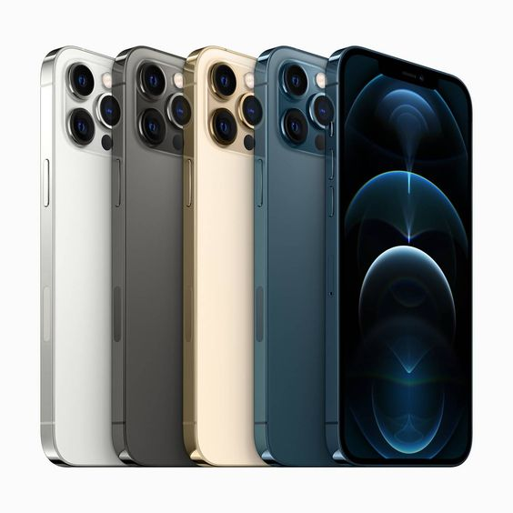
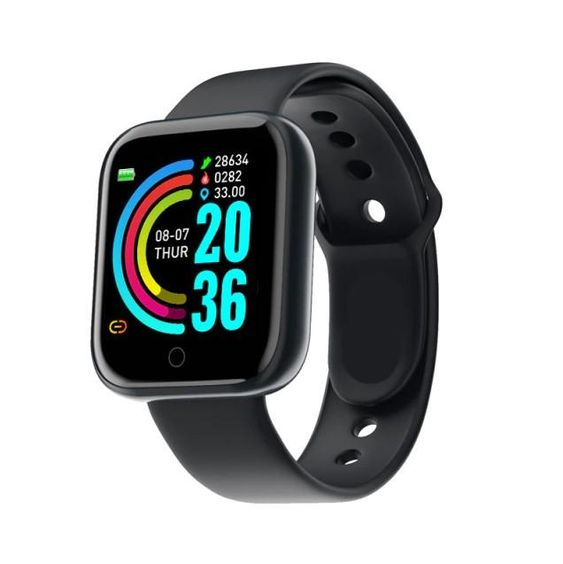
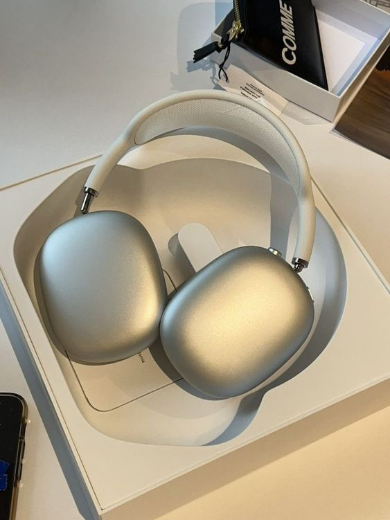

El Smartphone XYZ 2024 es el último modelo de la marca XYZ, con una pantalla OLED de 6.7 pulgadas, un procesador de última generación, y un sistema de cámaras que redefine la fotografía móvil.
El Smartwatch Alpha 2024 lleva la tecnología portátil a un nuevo nivel, con un diseño elegante, monitorización avanzada de la salud, y una batería que dura hasta dos semanas.
Los Auriculares Beta 2024 ofrecen una calidad de sonido inigualable con cancelación activa de ruido y un ajuste cómodo para largas sesiones de escucha.
